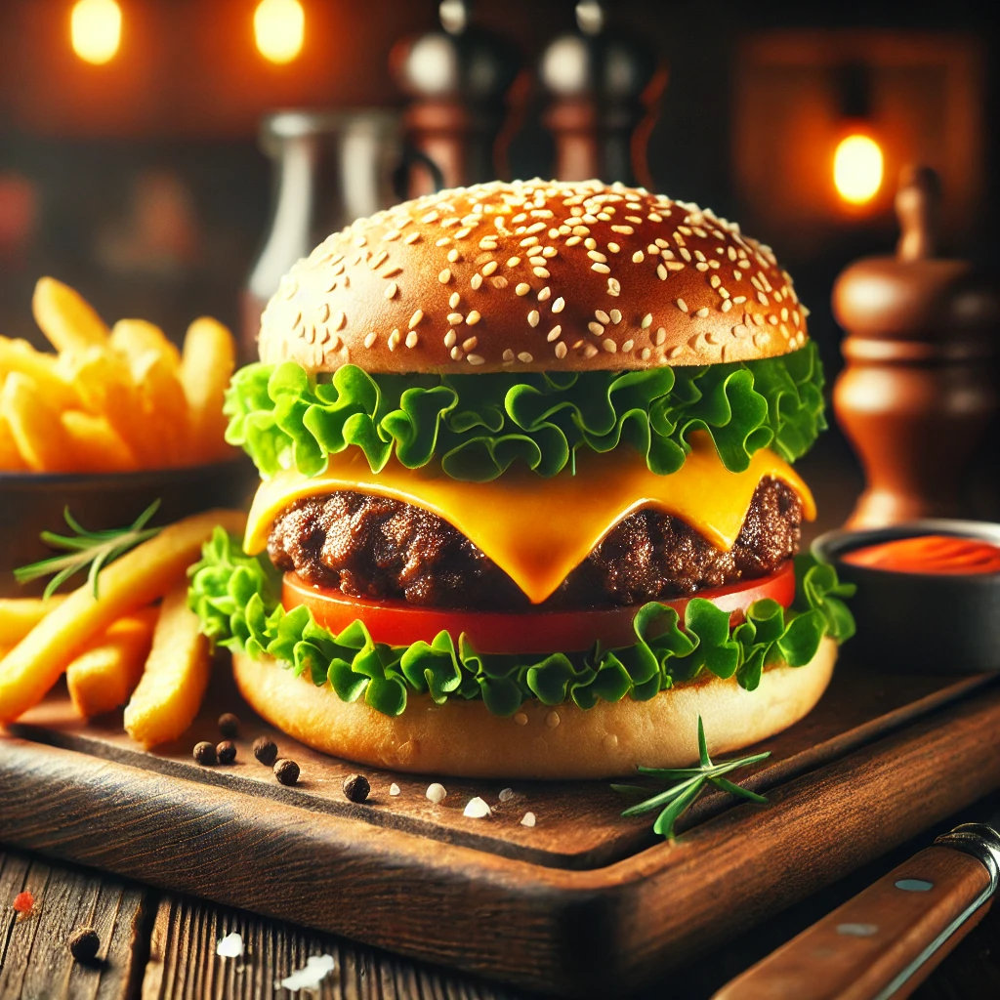

Home
Burger

Description
A burger is a type of sandwich made of a flat, round bread dough topped with a patty of ground beef,
and often cheese, lettuce, tomato, and onion.
Ingredients
- Burger bun
- Burger patty
- Burger cheese
Steps
- Preheat oven to 450 degrees F (230 degrees C).
- In a large skillet over medium-high heat, brown beef and season with salt and pepper; drain. Stir in spaghetti sauce and garlic and simmer 5 minutes.
- In a medium bowl, combine mozzarella, parmesan and ricotta; stir well. In 9x13 inch pan, alternate layers of noodles, meat mixture and cheese mixture until pan is filled.
- Bake in preheated oven for 30 minutes, or until cheese is melted and bubbly.